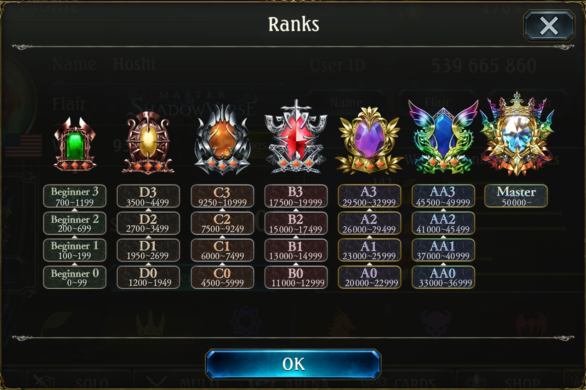
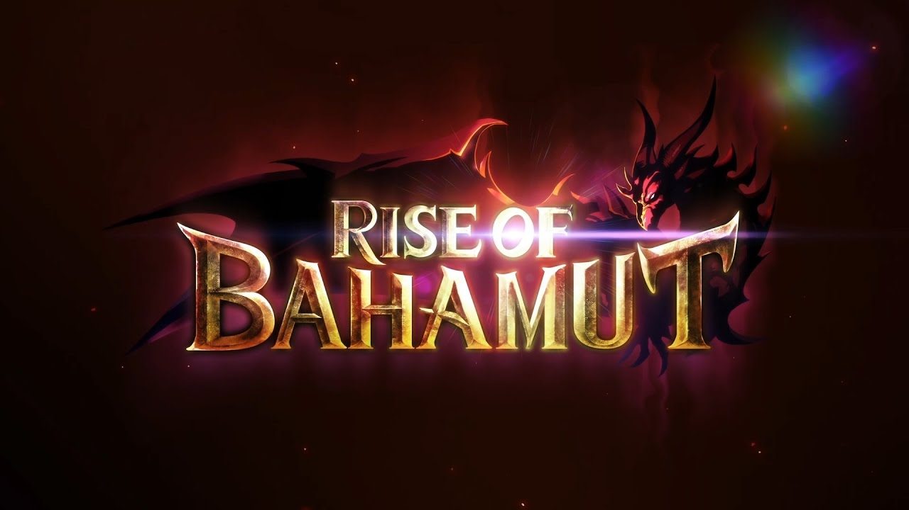
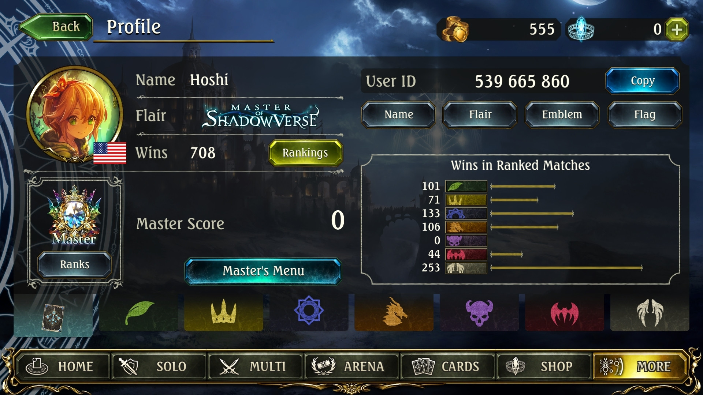

What is Shadowverse?
Shadowverse is a card game developed by Cygames which I recently picked up towards the end of 2016. It is mostly referred to as "anime hearthstone" or "waifuverse" by players as it mimics the gameplay of Hearthstone (with a few changes here and there), but also has an abundance of fanservice when it comes to the card art designs. I personally started the game because of my initial interest in a Dark Angel Olivia figurine, and heard that Shadowverse would be including the cast of Rage of Bahamut.
My Story.. !!
During my time playing Shadowverse, I've climbed the ranks from a lowly beginner, to a Master tiered player. While I never played Hearthstone
personally, I did have some knowledge of the game from watching streamers such as Kripparian play the game so some of the concept of getting
the most value out of every single card stuck with me. I'm going to be sharing a story about my journey from Beginner to Masters in Shadowverse.
Note: The rank lists becomes more important at the later stages due to the bigger point gaps as you progress throughout the tiers.

When I first started, I had a bit of guidance from my brother on how to "reroll" my game. This allowed me to continuously open the free 40 pack
of cards until I got some of the ones that I wanted. Click
Beginner to Rank B : Elana-Seraph Havencraft
Elana-Seraph was my first completed meta deck! After liquefying my useless legendaries and golds, I had accumulated about 12000 vials in order to complete my deck. After rerolling for a couple of hours, I got a lot with 2x Enstatued Seraphs, an animated garuda, and a copy of elanas as well as themis. At this stage, I still wasn't sure which class I wanted to play but I was told that I had most of the key cards to play havencraft. The only cards which I had to craft were mainly bronzes and silvers, which were easy on my vials, as well as other copies of themis, and elanas. While playing this deck, there were 2 win conditions that you could play towards. With Elana's Prayer, you could build a board of powerful followers by constantly buffing them. If the game were to go into the later turns, then dropping Enstatued Seraph would be the alternate win condition, which allows you to automatically win the match once the amulet reaches its final stage. Even with no prior experience of card games like Shadowverse, I managed to go on 10-20 game win streaks until I reached B rank.
Rank B to Rank A: Face Dragoncraft
After reaching rank B, I was already getting tired of playing Elana-Seraph. I wanted a new outlook on the game. Since my previous deck was combo and control heavy, I went for another deck which allowed me to dictate the pace of the game more. After my countless duels prior to crafting this deck, I had accumulated enough vials to build this one. This is also a relatively cheap deck as the only legendary that is used is Dark Dragoon Forte. The only other gold tier card that was used in this deck is Dragonewt Scholar. This deck did not yield as great of results such as the Elana-Seraph deck, but my winrate was still pretty good, and the games ended A LOT faster. The main win condition was to just flood the board with low cost monsters and attack the opponents leader directly. Dragon Emissary would be used in the deck to fetch Forte's as it was the only 5 cost or higher card that you would run in the entire deck. You either won by turn 6-7 or lost due to a lack of card draw.
Rank A0 to A1: Face Dragoncraft/Storm Havencraft
Once I hit rank A, the winstreak bonuses stopped, and every individual game provided a net gain/loss in skill rating. Basically, it was harder to rank up. At this level, every opponent that I faced would be running all the meta decks, which made my Face Dragon deck worse in comparison to the previous competition. At one point, every deck I faced seemed to be Storm Havencraft. Since I already played Elana-Seraph previously, I had a lot of the cards that were already required to play Storm Haven. I crafted a couple of Moon Al'Mirajs and a couple of Winged Sentinel Garudas alongside my already animated copy. The playstyle of Storm Haven was to basically drop a bunch of amulets which eventually turn into followers with "storm". Storm allows the follower to attack the opponents leader directly on the same turn that they are played. I played this deck until the middle of AA1 which is when the new expansion hit. In my opinion, Storm Haven was the strongest deck during the Darkness Evolved expansion.

New Expansion! Rise of Bahamut
In the new Rise of Bahamut expansion, I knew that my previous decks were most likely going to become obsolete. At this point I saved up about 30 packs worth of currency, and purchased some prebuilt decks (3x Forest, 2x Sword, 1x Blood, 1x Shadow, 1x Rune). From my packs, I ended up opening an Albert, 3x Darias, 1x Nephthys, 1x Bloodhungry Matriarch. I ended up crafting the missing Albert's that I needed in order to play the updated Midrange Sword list. I also completed a full Daria deck as I had the necessary cards, and was just missing some Levi's. With the 3x Forest decks that I purchased, it basically gave me the entire Combo Roach deck without Goblin Mages or Fortunehunter Feenas which are bronze and silver tiered respectively.
A1 to A1: Midrange Sword
With a set of completely new decks, I started to play Midrange Sword, a deck that I've always wanted to try out but didn't have the resources to. There was no efficient method to purchasing a large volume of packs, and I have never really had great luck to begin with, so I avoided spending any money until the prebuilt decks were introduced, which guaranteed to give you copies of the cards you wanted. But since the new expansion, I had run into Aggro Blood decks in 70% of my games. You have to note that as this stage in time, Daria was a new concept and people have not found an optimal decklist yet for her. I kept losing (and by losing I mean going about 50/50 which was rare for me at this point) so I decided to give up on Swordcraft for the time being.
A1 to AA0: Aggro Blood/Combo Roach Forest
Since I've lost so many games going first or second against Aggro Blood, I decided to craft the deck for myself. The most expensive card in the deck was Vania and Vampiric Fortress so it didn't cost me more than ~2500 vials to create, as I did receive a copy of each from the prebuilt deck, and I also had a copy of Vania from before. The deck was simple to play, I literally only hit the opponents leader every turn and usually won by turn 5 or 6. I believe I had a winstreak of 20+ games, and then another winstreak of 10+ games right after a loss. Needless to say, this deck was extremely overpowered until new decks to counter Aggro were developed. I also played Roach Forestcraft for a while as it was just introduced on Reddit, and nobody was really playing it at the early stages. The main idea of the Roach Combo deck was to use Goblin Mages and Fortunehunter Feenas to fetch Roaches from your deck in order to combo and kill your opponent in 1 turn (usually by turn 7/8). This deck was strong because Ancient Elf and other the overall tempo cards allowed you to also deal with Aggro Blood efficiently until you drew your combo.
AA0 to AA1: Midrange Sword
At this rank, I thought that AA0 was a respectable rank, and no longer had that much motivation to climb the ladder. I continued where I left off previously with Midrange Swordcraft, and just played the deck for fun. I slowly climbed to AA1 during this period, and spent most of my time farming Arena. During this time I acquired 7 of my 5-win Arena runs. I would average a bit under 4-wins per run.
AA1 to AA2: Elana Haven/Seraph Haven
After getting my fair share of playing Swordcraft, I was fed up with losing to Aggro Blood (once again!), as well as Last Word Shadow. I played pure Elana-Haven so that I could banish the cards from Shadow, as well as outheal Aggro Blood. The playstyle of pure Elana Havencraft was basically the same as Elana-Seraph, but you throw you late-game win condition away and replace it with more healing. The one deck I had trouble against was Daria, because she was growing in popularity and vomitted the board with over 14/14 worth of stats by turn 5 if the player gets good draws. With the introduction of Tribunal of Good and Evil and Ancient Lion in the new expansion, this gave Havencraft players even more board clear on top of Themis' Decree which enabled me to once again play Enstatued Seraph in a pure Seraph build.
AA2 to Masters: Daria Rune/Combo Roach/Seraph Haven
After reaching AA2 I realized that I might havee a chance of reaching Masters. I always hesitated with playing Daria in the past because I always thought that it was extremely draw dependant, and you could only control your fate so much even with Mulligans. I also did not have a lot of experiencing playing Runecraft as the class is find of unique compared to the rest. Oh how wrong I was, because the tempo of Daria decks were insane. Cards like Levi, Piercing Rune, Blade Mage, and Ogler were cards that synergized so well with the spellboost mechanic, it was enough to directly kill your opponent with spells even if you didn't draw Daria early. If Daria was drawn early with the right cards, it almost felt like there was no way of winning. In the case of a Daria vs Daria match, drawing Daria early as well as using most of your evolution on Levi's would be the decider in the match. Although, trading efficiently and getting the more value out of each card allowed me to win a smaller majority of these games. During this time (about 2 days actually), I just exclusively played Daria Rune, and Combo Roach until I reach masters. If I found that I was running into too much Aggro Shadow or Last Word Shadow, then I would periodically switch to Seraph Haven and played until I lost with the deck.
